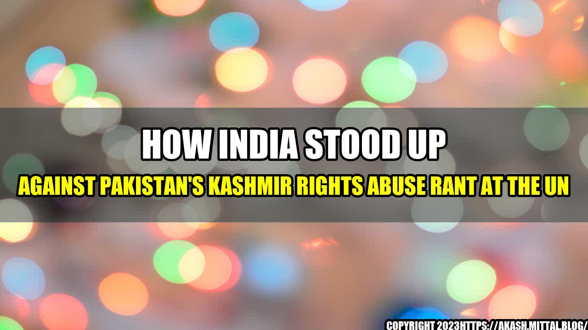

How India Stood Up Against Pakistan's Kashmir Rights Abuse Rant at the UN
On 26th September, 2019, the United Nations General Assembly (UNGA) witnessed a startling speech from Pakistan's Prime Minister Imran Khan, who accused India of human rights abuses and genocide in the conflict-ridden region of Kashmir. He invoked the UN resolutions and urged the international community to take urgent action to resolve the issue. However, what went unnoticed by many was the feat India had achieved in stopping Pakistan's false narrative.
India's Response in Numbers
In response to Imran Khan's speech, India exercised its right of reply at the UNGA and refuted Pakistan's allegations with factual evidence, highlighting human rights abuses in Pakistan-occupied Kashmir (PoK) and Balochistan. India also pointed out that Pakistan had become "the world's largest exporter of deadly terrorism, its political system has been bifurcated between extremist military and corrupt politicians, and minorities are denied basic human rights".
Here are some quantifiable examples of India's response:
- India highlighted that in the last 30 years, Pakistan has "sanctified" terrorism and that its current ruler had admitted to training and exporting terrorists.
- India cited statistics from the UN's world drug report, which showed that Pakistan is the source of 50% of the world's supply of heroin.
- India pointed out that while Pakistan accuses India of human rights abuses in Kashmir, it itself has been violating human rights in its own territory, including in Balochistan and Sindh.
India's response successfully dismantled Pakistan's deceitful narrative, and exposed its hypocrisy to the world.
India's Strategy in the UN
India's response was not just factual, but also strategic. India used the opportunity to focus on Pakistan's misdeeds and highlight its diplomatic isolation, while also showcasing its own democratic and inclusive credentials. India focused on facts, and used a calm and composed tone, which was in stark contrast to Pakistan's aggressive and belligerent approach. This strategy was successful in projecting India as a mature, responsible, and credible member of the global community.
The Way Forward
The response to Pakistan's allegations at the UN has set a new benchmark for India-Pakistan diplomacy. India's response not only exposed Pakistan's ulterior motives, but also highlighted its own commitment to peace and stability in the region. This has given India a strong position at the global stage, which will enable it to counter Pakistan's propaganda attempts in the future.
Here are the key takeaways:
- India needs to continue to project itself as a responsible and democratic member of the global community, which it has already demonstrated in its response to Pakistan at the UN.
- India needs to shift the focus from Pakistan's rhetoric to the ground reality in Kashmir, and continue to work towards the development of the region and the welfare of its people.
- India should continue to expose Pakistan's true nature to the world, and counter its attempts to destabilize the region through terrorism and other measures.
Conclusion
India's response to Pakistan's allegations at the UNGA was a masterclass in diplomacy. It effectively countered all of Pakistan's false propaganda, showcased India's mature and credible position on the global stage, and highlighted Pakistan's own misdeeds. India's response has set a new standard for India-Pakistan diplomacy, and has given India the upper hand in the ongoing conflict. It is now up to India to capitalize on this victory and work towards a stable and peaceful future for the region.
References:
Hashtags:
- #IndiaVsPakistan
- #UNGA
- #KashmirConflict
SEO Keywords:
- India-Pakistan Conflict
- UNGA Speech
- Kashmir Human Rights
- Pakistan Terrorism
Category:
Politics and International Affairs
Curated by Team Akash.Mittal.Blog
Share on Twitter Share on LinkedIn